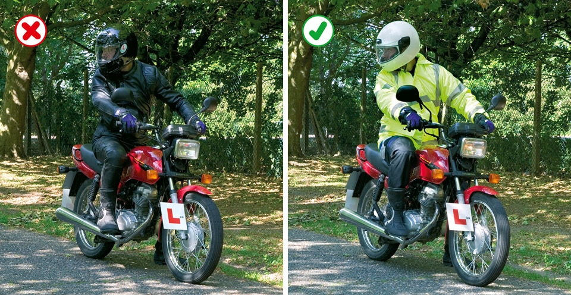

Rules for motorcyclists (83 to 88)
- General guidance (83 to 88)
- Motorcycle licence requirements
1. General guidance (83 to 88)
These Rules are in addition to those in the following sections which apply to all vehicles. See Motorcycle licence requirements).
83
On all journeys, the rider and pillion passenger on a motorcycle, scooter or moped MUST wear a protective helmet. This does not apply to a follower of the Sikh religion while wearing a turban. Helmets MUST comply with the Regulations and they MUST be fastened securely. Riders and passengers of motor tricycles and quadricycles, also called quadbikes, should also wear a protective helmet. Before each journey check that your helmet visor is clean and in good condition.
Laws RTA 1988 sects 16 & 17 & MC(PH)R as amended reg 4
On all journeys, the rider and pillion passenger on a motorcycle, scooter or moped MUST wear a protective helmet. This does not apply to a follower of the Sikh religion while wearing a turban. Helmets MUST comply with the Regulations and they MUST be fastened securely. Riders and passengers of motor tricycles and quadricycles, also called quadbikes, should also wear a protective helmet. Before each journey check that your helmet visor is clean and in good condition.
Laws RTA 1988 sects 16 & 17 & MC(PH)R as amended reg 4
84
It is also advisable to wear eye protectors, which MUST comply with the Regulations. Scratched or poorly fitting eye protectors can limit your view when riding, particularly in bright sunshine and the hours of darkness. Consider wearing ear protection. Strong boots, gloves and suitable clothing may help to protect you if you are involved in a collision.
Laws RTA sect 18 & MC(EP)R as amended reg 4
It is also advisable to wear eye protectors, which MUST comply with the Regulations. Scratched or poorly fitting eye protectors can limit your view when riding, particularly in bright sunshine and the hours of darkness. Consider wearing ear protection. Strong boots, gloves and suitable clothing may help to protect you if you are involved in a collision.
Laws RTA sect 18 & MC(EP)R as amended reg 4
85
You MUST NOT carry more than one pillion passenger who MUST sit astride the machine on a proper seat. They should face forward with both feet on the footrests. You MUST NOT carry a pillion passenger unless your motor cycle is designed to do so. Provisional licence holders MUST NOT carry a pillion passenger.
Laws RTA 1988 sect 23, MV(DL)R 1999 reg 16(6) & CUR 1986 reg 102
You MUST NOT carry more than one pillion passenger who MUST sit astride the machine on a proper seat. They should face forward with both feet on the footrests. You MUST NOT carry a pillion passenger unless your motor cycle is designed to do so. Provisional licence holders MUST NOT carry a pillion passenger.
Laws RTA 1988 sect 23, MV(DL)R 1999 reg 16(6) & CUR 1986 reg 102
86
Daylight riding. Make yourself as visible as possible from the side as well as the front and rear. You could wear a light or brightly coloured helmet and fluorescent clothing or strips. Dipped headlights, even in good daylight, may also make you more conspicuous. However, be aware that other vehicle drivers may still not have seen you, or judged your distance or speed correctly, especially at junctions.
Daylight riding. Make yourself as visible as possible from the side as well as the front and rear. You could wear a light or brightly coloured helmet and fluorescent clothing or strips. Dipped headlights, even in good daylight, may also make you more conspicuous. However, be aware that other vehicle drivers may still not have seen you, or judged your distance or speed correctly, especially at junctions.

Rule 86: Help yourself to be seen
87
Riding in the dark. Wear reflective clothing or strips to improve your visibility in the dark. These reflect light from the headlamps of other vehicles, making you visible from a longer distance. See Rules 113–116 for lighting requirements.
Riding in the dark. Wear reflective clothing or strips to improve your visibility in the dark. These reflect light from the headlamps of other vehicles, making you visible from a longer distance. See Rules 113–116 for lighting requirements.
88
Manoeuvering. You should be aware of what is behind and to the sides before manoeuvring. Look behind you; use mirrors if they are fitted. When in traffic queues look out for pedestrians crossing between vehicles and vehicles emerging from junctions or changing lanes. Position yourself so that drivers in front can see you in their mirrors. Additionally, when filtering in slow-moving traffic, take care and keep your speed low.
Remember: Observation – Signal – Manoeuvre.
Manoeuvering. You should be aware of what is behind and to the sides before manoeuvring. Look behind you; use mirrors if they are fitted. When in traffic queues look out for pedestrians crossing between vehicles and vehicles emerging from junctions or changing lanes. Position yourself so that drivers in front can see you in their mirrors. Additionally, when filtering in slow-moving traffic, take care and keep your speed low.
Remember: Observation – Signal – Manoeuvre.